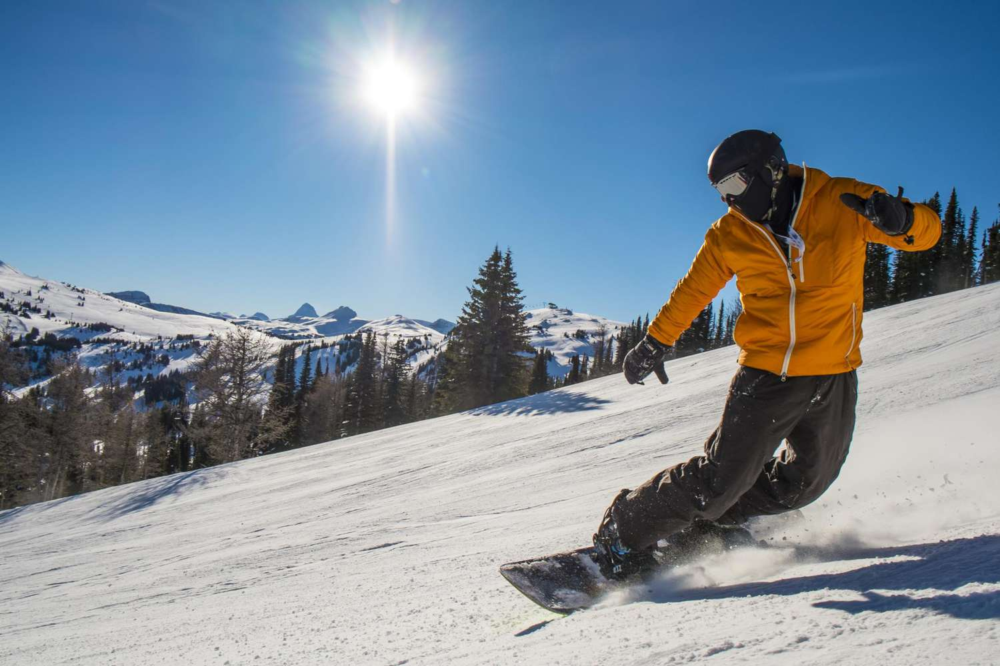
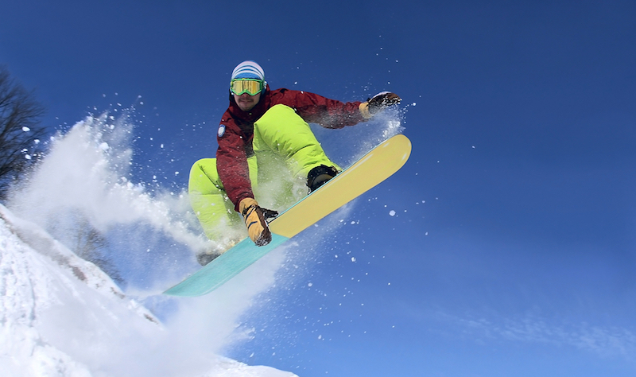
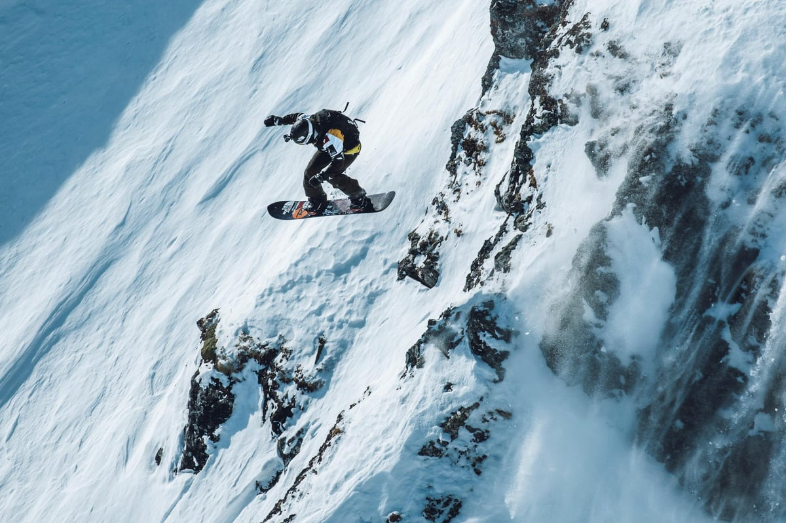
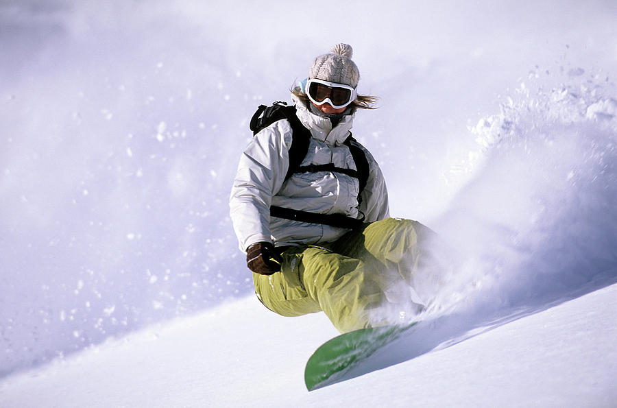
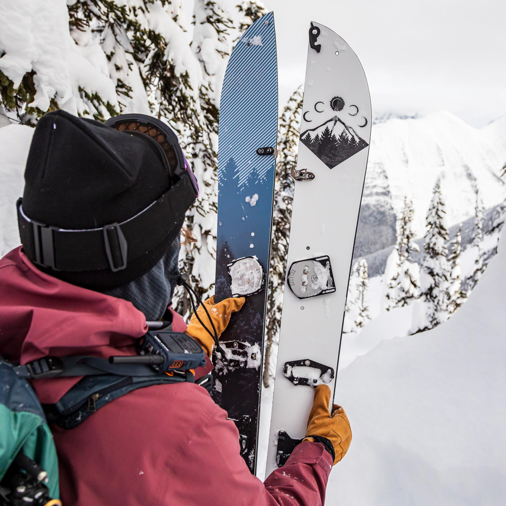

The purpose of this website is to help you find the right geat for the perfect ride. The following video gives us an quick overview on some essentials we need to consider when choosing a right snowboard.
Before we go too far. Let's learn what is the basic parts of a snowboard.
How to pick the right snowboard size?
The snowboard size calculator can tell a person which snowboard would fit you properly and would let you enjoy your game to the utmost.
What type of snowboard should I get?
add info later
All Mountain
add info later

Freestyle
add info later

Freeride
add info later

Powder
add info later

Splitboard
add info later

Snowboard Camber and Rocker Profile
add info later
Camber
add info later
Rocker
add info later
Flat
add info later
Hybrid Camber
add info later
Hybrid Rocker
add info later
Directional Camber
add info later
What is snowboard shape?
add info later
Twin
add info later
Asymmetrical Twin
add info later
Directional
add info later
Directional Twin
add info later
Tapered Twin
add info later
What is snowboard flex rating?
add info later
Centered VS Setback
add info later
Centered
add info later
Setback
add info later
How is your Snowboard Riding Skill Level?
The right board can make learning much easier for beginners and if you are an expert rider you want a board that can do everything you need it to.
One of the specs you will see when you are buying is whether the board is for Beginner, Intermediate, Advanced or Expert. Often it is the case the board may cover a range - i.e. Beginner to Advanced.
Check out the following to see which level are you in.
Beginner Level 1:This is your first day (or first couple of days). You are brand new. You start out learning how to control your speed and get some distance down a slope without bailing! You are learning how to stop yourself without falling.
Beginner Level 2:You are now relatively comfortable snowflaking, that is guiding yourself down the slope on the same edge. You are becoming more adept at being able to stop yourself without falling. You are probably starting to try linking turns but not very successfully just yet.
Beginner Level 3:You can now link turns in both directions (i.e. from your heel edge to your toe edge and your toe edge to your heel edge) on gentle slopes. Your turns are probably C shape turns at this point. You might be branching out into the intermediate runs but not so comfortable linking turns on those yet. Sliding (falling leaf) on intermediate runs is probably within your realm though.
Beginner Level 4:You can now link turns in both directions (i.e. from your heel edge to your toe edge and your toe edge to your heel edge) on green (beginner) and intermediate (blue) slopes. Your turns are now becoming "S" shape turns. You can now control your speed well.
Intermediate Level 5:You are now comfortable linking turns on any beginner or intermediate slope and you can do so at increasingly high speeds - and you have full control of the speed your riding (even if it means having to out on the brakes at times). You can attempt black runs - but it's not always pretty! You are getting better at navigating more uneven terrain.
You might be trying little natural jumps or small jumps in the park, if that interests you - and you're starting to learn how to ride switch.
You might be starting to try some carving and your S turns are getting smoother - you still skid them sometimes, especially on steeper terrain, but at times you are getting cleaner lines. And on powder days, you might be starting to explore off the groomer.
Intermediate Level 6:You can now link turns at reasonably high speeds and on steeper slopes. Your technique is smoother and you can ride black runs with a fair level of comfort. You are very confident and comfortable bombing intermediate runs.
You may also be venturing off groomer, quite a bit more, including trees (off piste).
Your turns are becoming smoother (not at the stage of never skidding, but skidding is becoming less frequent). You can stop on a dime when needed, and can turn sharply when needed. You are starting to learn other types of turns, like down-unweighted turns and proper carves.
If you are leaning towards freestyle riding, then your switch riding is getting smoother. You can comfortably do ollies and are confident on small to medium jumps. You might be 50/50 or board sliding boxes, and maybe even a pipe or rail. You can do 180s confidently or are on your way to doing them and might be attempting larger rotations. You probably have at least one grab in your repertoire. And you might be trying out the pipe.
Advanced Level 7:You are now a very confident snowboarder who can tackle almost any terrain on and off groomer (piste). You might be starting to do backcountry excursions too, if that interests you.
You are comfortable riding and turning at speed. You have mastered multiple turn types - including carving & down unweighted turns - and leave thin clean lines behind you. Riding switch has become second nature too.
If you are park inclined, then small to medium jumps with smooth confident 180s & 360s are in your bag of tricks for sure (and larger rotations are coming in, if that interests you). Large jumps are no problem for you now too - whether you might be just straight airing them - or performing spins. You probably have multiple grabs that you are comfortable performing.
You can confidently ride larger rails and pipes and are getting more technical on them - like 180s onto and off, tail and nose presses etc.
You can, and often do, use the mountain like a park if you are so inclined.
Expert Level 8+:Depending on your chosen style:
Freeriding: You can bomb any slope, chute, bowl, you name it, and are confident on any terrain. On backcountry excursions you are finding more and more challenging terrain, hucking cliffs and you have a fluidity, flow and cleanness to your riding. All turn types are mastered and you can adapt to any situation.
Freestyle: Large to XL jumps with 180s, 360s, 540s and larger rotations. Taking off and landing switch is no issue. Inverted aerials might now be in your realm too. On rails, boxes, pipes etc - you are creative and confident. Using multiple tricks and creativity on natural features too.
As an expert level rider, there’s still always room to improve of course, but you have mastered snowboarding and your board has become an extension of your body.